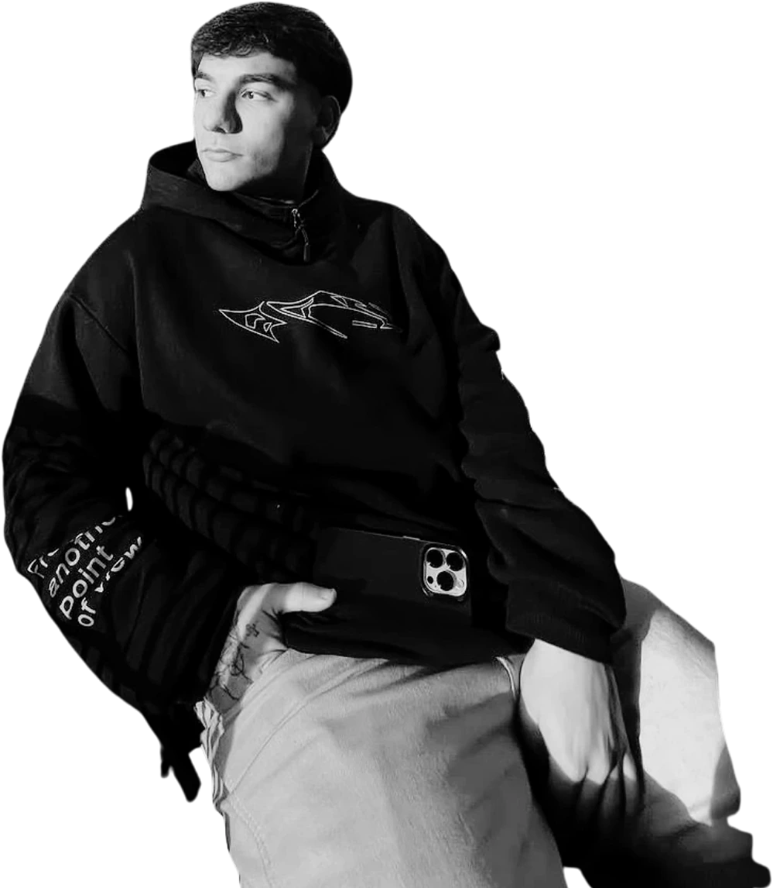

Mezcla de las tres: índice de trabajos como pantalla central (A) + Sobre mí como panel que se abre desde la barra (C) + botella que se arma al entrar a su mundo (B). Es una maqueta visual con tus fotos, colores y textos reales; no es el sitio funcionando. Lo animado se explica en cada pantalla.
1 · PortadaPantalla 1Solo identidad. Los accesos viven en la barra (ya no se repiten abajo). Un único botón principal. El nombre y el retrato siguen en 3D con capas.
Agustín Hidalgo
Diseño gráfico
Agustín Hidalgo

Portfolio · 2026
Diseñador y comunicador visual.Estudiante de Comunicación Visual, Gráfica y Digital · Universidad de Belgrano.
Ver trabajos ↓
2 · TrabajosPantalla 2El trabajo aparece enseguida. Al pasar el cursor por un proyecto, su objeto 3D aparece y empieza a armarse (trazo técnico → vidrio → etiqueta). En celular se muestra el objeto de la fila tocada.
Agustín Hidalgo
Portfolio
Trabajos
01Cordero con piel de loboRediseño de marca y sistema de envases · 2025
02Be FreshDiseño de logo e identidad visual · 2026
3 · Mundo 01 — la bodegaAl entrarPantalla completa, color vino. Un breve «entrando a la bodega» (≈1 s, en una esquina). Texto corto y botón visible. Índice lateral 01 / 02 para saber dónde estás. La botella termina de armarse y gira al dorso al seguir bajando.
Agustín Hidalgo
Proyecto 01
Cordero con piel de lobo
Rediseño de marca y sistema de envases
Rediseño conceptual desarrollado a partir de la tensión entre apariencia y esencia, con ilustración y textura como recursos narrativos.
Ver proyecto completo →
Año2025
TipoRediseño de marca · Packaging
CategoríaVino tinto · Blend
01 Cordero
02 Be Fresh
entrando a la bodega
4 · Mundo 02 — la barberíaSiguienteMismo esquema, otro ambiente: negro de salón, poste de barbero, suelo ajedrezado. La capa es la única protagonista; se arma (patrón → tela) y se agita con el scroll.
Agustín Hidalgo
Proyecto 02
Be Fresh
Diseño de logo e identidad visual
Identidad para una barbería que se aleja de los códigos tradicionales: elegancia, detalle y autenticidad en un sistema sobrio y monocromático.
Ver proyecto completo →
Año2026
TipoIdentidad visual · Logo e isologo
CategoríaBarbería · Servicios
01 Cordero
02 Be Fresh
entrando a la barbería
5 · Sobre mí (panel)Desde la barra, en cualquier momentoYa no es una sección más del recorrido: se abre encima de lo que estés viendo, con tu foto, un texto corto y el CV. La formación y la experiencia completas quedan en la página «Sobre mí en detalle». Se cierra con Esc o con clic afuera.
Agustín Hidalgo
Cordero con piel de lobo
6 · ContactoFinalCierre simple. El WhatsApp es la acción destacada (rojo); email, Instagram y CV debajo. Se elimina la pausa luminosa de «Filosofía» como sección aparte: su frase pasa a la portada o al panel Sobre mí si querés conservarla.
Agustín Hidalgo
Muchas gracias
¿Tienes un proyecto en mente o quieres conversar sobre diseño? Escríbeme por el medio que prefieras.
WhatsApp+54 9 11 7082-8071↗
Emailagustinn.hidalgoo@gmail.com→
Instagram@agustinhidalgo.desing↗
CurrículumDescargar CV (PDF)↓
Scroll total≈ 6–7 pantallas (hoy ≈ 13).
Se mantiene3D, retrato en capas, botella que se arma, capa, mundos, cursores, sonido (con las mejoras ya hechas).
Se eliminaAccesos repetidos, Introducción como sección, texto del Portfolio, grilla de CV en la home, tramos de 3 pasos.
Se agregaÍndice de trabajos como pantalla central, índice lateral 01/02, panel Sobre mí, botones de proyecto visibles.
Ojo con esto
Es una maqueta estática: las proporciones del 3D y los tiempos de animación reales los defino al construirlo. Los teléfonos, el mail y el Instagram son los que ya tiene el sitio. Si algo no te cierra (orden, qué sacar, qué dejar), decime y lo ajusto en la maqueta antes de tocar el código.